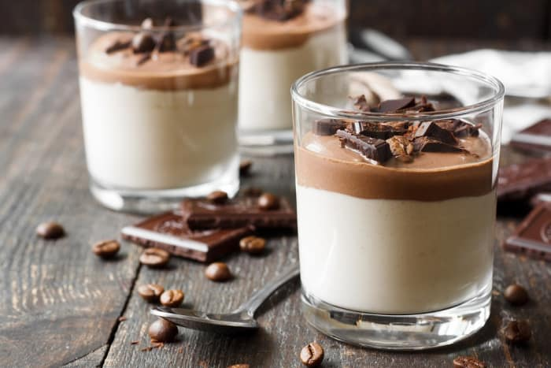

Simplicity at its finest, this softly set pudding takes almost no effort to make, yet is nothing short of amazing! Even though panna cotta (lit. cooked cream) wasn't mentioned in Italian cookbooks until the 1960s, today it is considered a traditional Piedmontese dessert, and the original recipe calls for only whole cream, sugar, vanilla, and gelatin.
Meal prep time : 35 minutes
Servings : 6